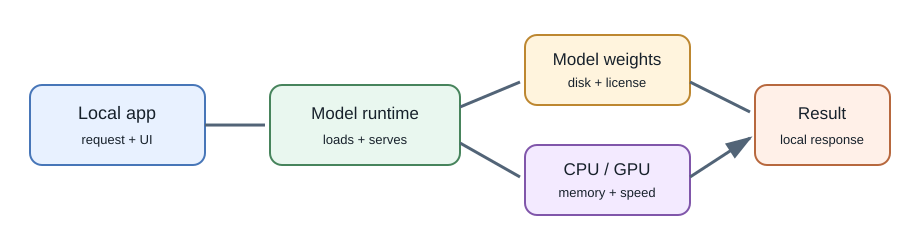
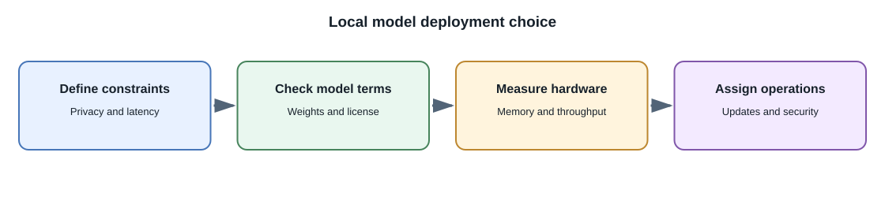

Running Models Locally¶
Introduction¶
Local inference runs a model on your own computer or on infrastructure you control instead of sending each request to a hosted model API. It can be useful for learning, offline experiments, privacy-sensitive workflows, or reducing dependence on a particular hosted service.
"Free" usually means no provider charge per request. It does not mean zero cost: hardware, electricity, disk space, setup, speed, and maintenance still matter. Some model weights also have licenses or usage terms.
Common ways to run a model¶
| Approach | What it provides | Useful when |
|---|---|---|
| Desktop model application | UI for downloading and chatting with local models | Learning and manual experiments |
| Local model runner with an HTTP endpoint | A local service an application can call | Prototyping an integration on one machine |
| Python inference libraries | Code-level model loading and inference | Experiments, model evaluation, and ML development |
| Self-hosted inference server | Model endpoint on your own machine or cloud GPU | A team needs controlled hosting or a private deployment |
Examples include Ollama and LM Studio for local experimentation, llama.cpp for efficient inference across supported hardware, and Hugging Face Transformers for programmatic model workflows. These tools are not interchangeable; check supported hardware, model formats, licenses, and security settings.
Local application flow¶


- Select a model whose license permits your intended use.
- Download its weights from a trusted source and verify the source and published checksums where available.
- Load it with a compatible runtime and hardware configuration.
- Send prompts to the local process or its loopback HTTP endpoint.
- Measure latency, memory use, output quality, and failure behavior.
For an application running on the same computer, bind development services to loopback where possible. Do not expose a local model server to a network without authentication and access controls.
Hardware and model size¶
Inference requires model weights and working memory for intermediate calculations and the context. Quantization stores weights with fewer bits than the original representation and can reduce memory needs, usually with some quality or numerical trade-off. GPU support can increase throughput, but model format and available memory determine what fits.
A smaller quantized model may be more practical on a laptop than a larger model, but task quality varies. Use a small test set for your task rather than choosing only by model size or a benchmark score from another workload.
Privacy and offline use¶
Local inference can keep prompts on a machine you control, but it does not automatically guarantee privacy. The application may still log prompts, synchronize files, expose a local network port, or load untrusted model artifacts. Review telemetry, storage, permissions, and network behavior.
Offline operation is possible only if the runtime, weights, and application dependencies are already available and the chosen features do not require an external service.
Local versus hosted inference¶
| Consideration | Local | Hosted API |
|---|---|---|
| Per-request provider billing | None for local-only inference | Usually usage-based or subscription-based |
| Upfront resources | Local/server hardware and operations | Provider manages inference infrastructure |
| Data path | Can remain on controlled hardware | Input is transmitted to the provider under its terms |
| Scaling | You provision and operate capacity | Provider may scale within quotas and service limits |
| Model access | Depends on available weights and license | Depends on provider's available models |
| Maintenance | Runtime, drivers, model updates, monitoring | Provider API and model lifecycle management |
There is no universal winner. Hybrid systems may route sensitive or offline tasks locally and other tasks to an approved hosted service.
Full-stack development¶
The browser should call your backend, and the backend should call the local model server. Do not make a local inference endpoint public merely to let the browser reach it. In production, use an authenticated service boundary, resource limits, monitoring, and a queue if generation is too slow for request-response work.
Common misconceptions¶
- Local models do not require a paid API key, but still consume hardware and operational resources.
- A model downloaded locally is not necessarily open source or unrestricted.
- Quantization can help a model fit; it does not guarantee unchanged quality.
- Running locally does not make outputs accurate or safe by itself.